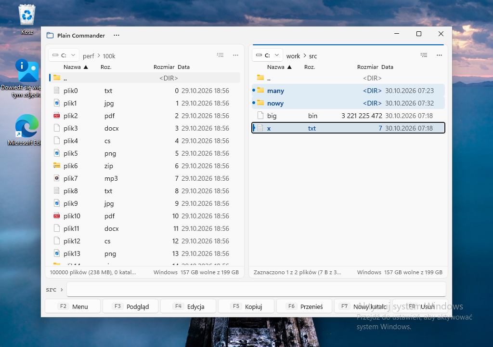
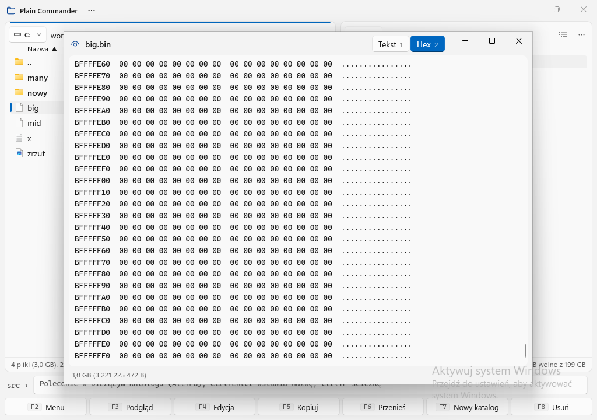
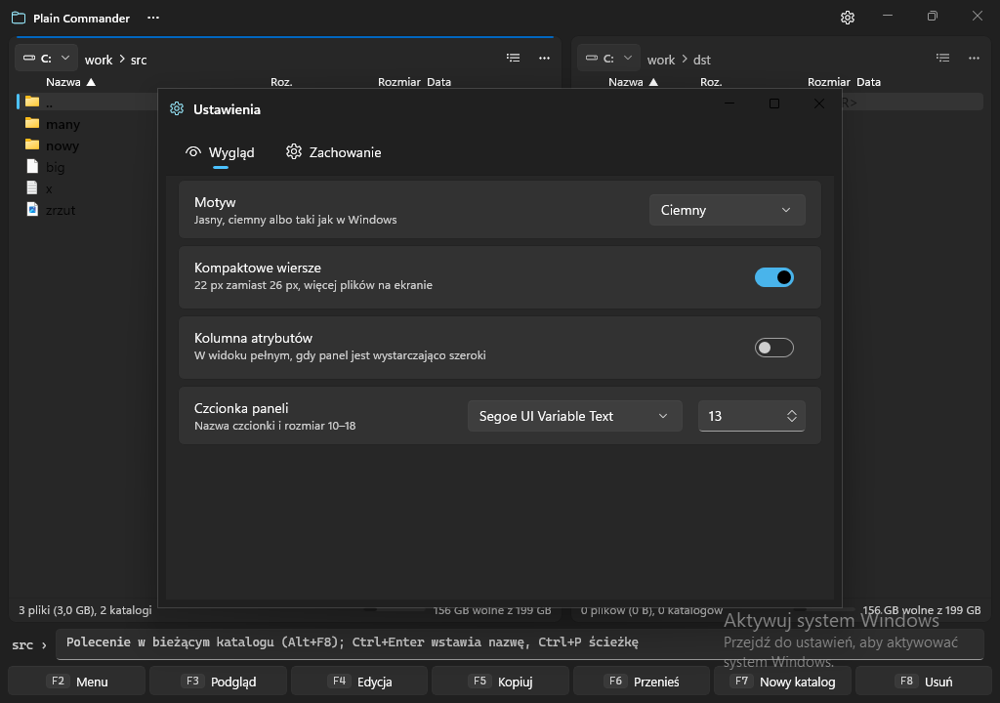
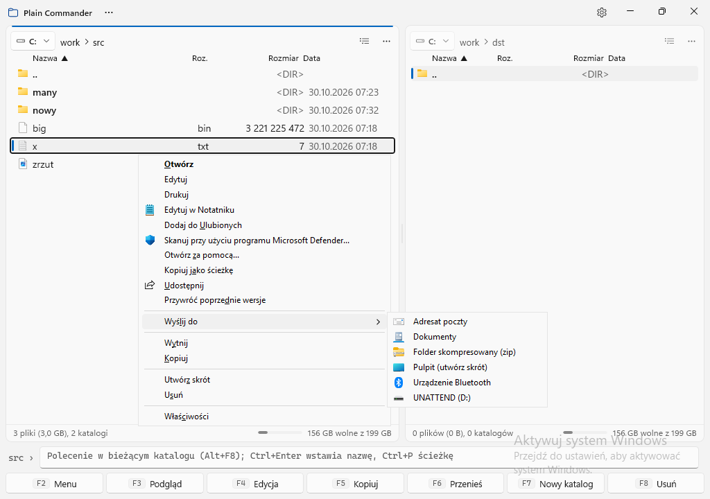

Dwupanelowy menedżer plików dla Windows 11: obsługa z klawiatury, nowoczesny wygląd Fluent, szybkie operacje na dziesiątkach tysięcy plików.
Pakiet MSIX, 35 MB, zawiera własny runtime. Windows 11 22H2 lub nowszy. Wersja ARM64 w przygotowaniu.

Wszystko, czego oczekujesz po dwupanelowym menedżerze, bez przeładowania. Każda funkcja ma skrót i działa bez myszy.
Karty z okruszkami ścieżki, przyciskiem dysku, historią (Alt+↓) i ulubionymi (Ctrl+D). Tab przełącza, Ctrl+U zamienia, rozdzielacz do przeciągnięcia.
Lista wirtualizowana, ikony ładowane w tle, sortowanie w osobnym wątku. Katalog ze 100 tys. wpisów renderuje się w kilkadziesiąt milisekund.
F5 kopiuj, F6 przenieś, F7 nowy katalog, F8 do kosza. Kolejka, pauza, praca w tle, konflikty z opcją „dla wszystkich”. Małe pliki kopiowane równolegle: 50 tys. plików w 18 s.
Tekst z wykrywaniem kodowania (UTF-8, UTF-16, Windows-1250), hex dla plików dowolnej wielkości, obrazy z powiększaniem. F4 otwiera edytor, który wybierzesz.
Alt+F8 i piszesz: polecenie uruchamia się w bieżącym katalogu, cd i litera dysku zmieniają panel. Ctrl+Enter wstawia nazwę pliku, Ctrl+L pozwala wpisać ścieżkę z podpowiedziami.
Mica, motyw jasny i ciemny, menu kontekstowe Eksploratora pod prawym przyciskiem, kosz systemowy, ścieżki ponad 260 znaków, polski i angielski interfejs.



Plain Commander jest pakietem MSIX, więc instaluje się i odinstalowuje jak aplikacja ze Sklepu. Wydanie 1.13.7 jest podpisane certyfikatem deweloperskim, który trzeba raz dodać do zaufanych.
PlainCommander-1.13.7-x64.msix oraz certyfikat PlainCommander-dev.cer.
Kliknij plik .cer prawym przyciskiem → Zainstaluj certyfikat → Komputer lokalny → magazyn „Zaufane osoby”. Albo w podniesionym PowerShellu:
Import-Certificate -FilePath .\PlainCommander-dev.cer -CertStoreLocation Cert:\LocalMachine\TrustedPeople
Dwuklik na .msix otwiera Instalatora aplikacji; kliknij „Zainstaluj”. Plain Commander pojawi się w menu Start. Kolejne wersje instalują się tym samym plikiem, ustawienia zostają.
%LOCALAPPDATA%\Packages\PlainCommander.App_…\LocalCache\Local\PlainCommander. Wersja uruchamiana z kodu źródłowego używa %LOCALAPPDATA%\PlainCommander.Wszystko pod klawiszami funkcyjnymi, bez niespodzianek.
| Tab | przełącz panel |
| Enter / Backspace | wejdź / katalog nadrzędny |
| Insert, Spacja | zaznacz (Spacja liczy katalog) |
| Num + / Num − / Num * | zaznacz wg maski / odznacz / odwróć |
| F3 / F4 | podgląd / edycja (Shift+F4 nowy plik) |
| F5 / F6 / F7 / F8 | kopiuj / przenieś / nowy katalog / do kosza |
| Shift+F6 / Shift+Del | zmień nazwę / usuń trwale |
| Alt+F1 / Alt+F2 | dysk lewy / prawy |
| Ctrl+F1 / Ctrl+F2 | widok skrócony / pełny |
| Ctrl+F3 … Ctrl+F6 | sortuj: nazwa, rozszerzenie, data, rozmiar |
| Ctrl+← / Ctrl+→ | ten katalog w drugim panelu |
| Alt+F8, Ctrl+L, Ctrl+H | linia poleceń, wpisz ścieżkę, pokaż ukryte |